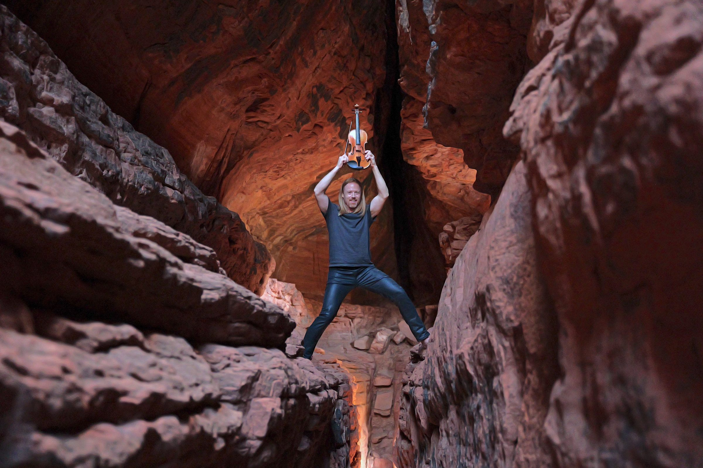
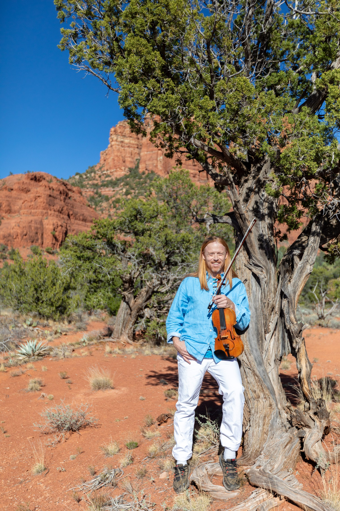

Sedona, Arizona
Tyler Carson brings his violin into Sedona's hidden red rock formations — and plays a private concert, just for you. No audience. No stage. Just ancient stone, open sky, and music that lives inside the landscape.
For Couples
The most romantic evening in Sedona. A private canyon concert, a professional photographer, and a moment you'll carry for the rest of your life.
Complete Package · $2,000
Plan Your SerenadeFor All Groups
A private violin concert in Sedona's red rock wilderness. Four packages for couples, small groups, celebrations, and unforgettable events.
From $499 · Up to 10 guests
See All Experiences
What This Is
Tyler spent eight years scouting the landscape of Sedona to find the locations that do something most visitors never find — places where the red rock itself becomes part of the music. Hidden viewpoints tucked behind juniper groves. Canyon formations that hold sound the way concert halls were designed to.
The concert runs about 75 minutes. Tyler leads you in, sets the scene, and plays. Guests often go quiet and stay that way. The kind of silence that means something is actually happening.
She said I was doing God's work — turning the landscape into music she could feel in her whole body.
— Tyler, on a guest's reaction
Mind blown. I will never forget this experience. Such a unique, deeply moving moment.
— Red Rock Nature Concert guest
We bought all 14 of his CDs afterward. I don't think either of us spoke on the drive back.
— Private concert guest
The Locations
These are not viewpoints on the tourist map. Tyler discovered them over years of exploring Sedona's backcountry — and chose them because they do something rare: they make the violin sound like it's coming from the earth itself.

Tyler Carson
Tyler calls his way of playing "Living Music" — a style that doesn't perform for you so much as it opens something in you. The Red Rock Nature Concert is where that philosophy meets the landscape that inspired it.
An 8-year resident of Sedona, Tyler's musical path ran through some of the world's most extraordinary stages and traditions before arriving here. He gave his first solo violin concert at Pintanga Hall in Auroville, India. He toured Ireland with Sandy Kelly — a Johnny Cash collaborator — and played alongside heritage musicians at sites older than the pyramids. He played fiddle tunes for 60,000 people at the Commonwealth Games at age 11, and reinvented those same tunes as soloist with the Victoria Symphony Orchestra two years later.
He chose Sedona because it plays back.
Reserve Your Concert
Every concert is confirmed personally by Tyler within 24 hours. Select the experience that's right for you, or reach out if you're planning something that needs a conversation first.